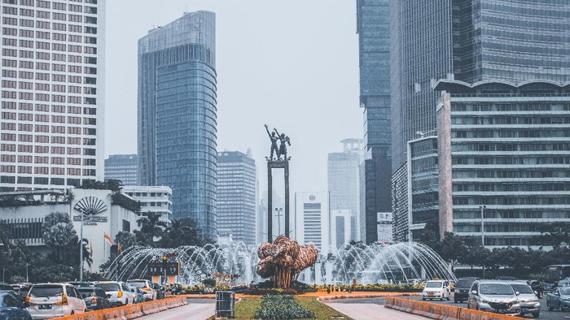
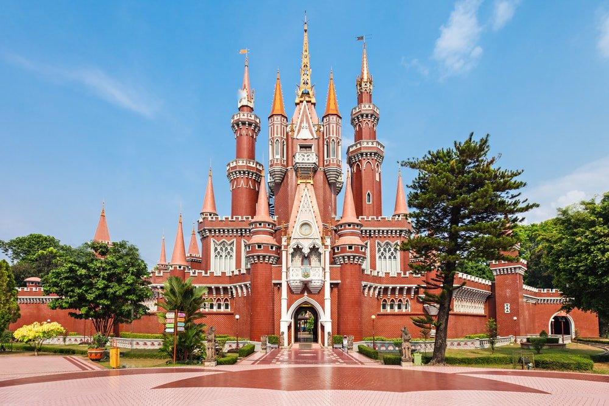
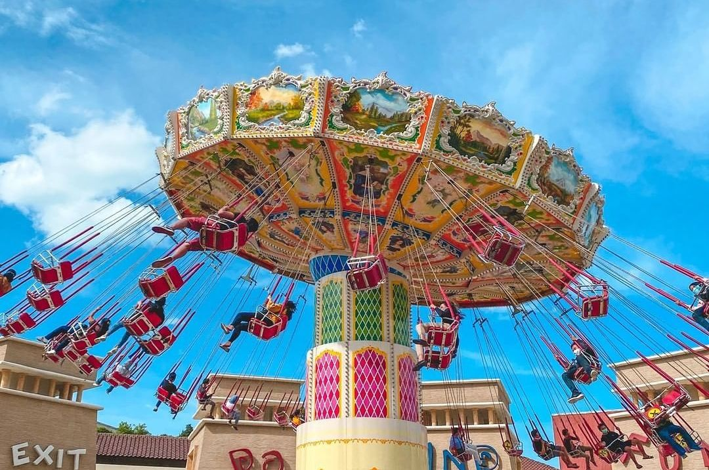
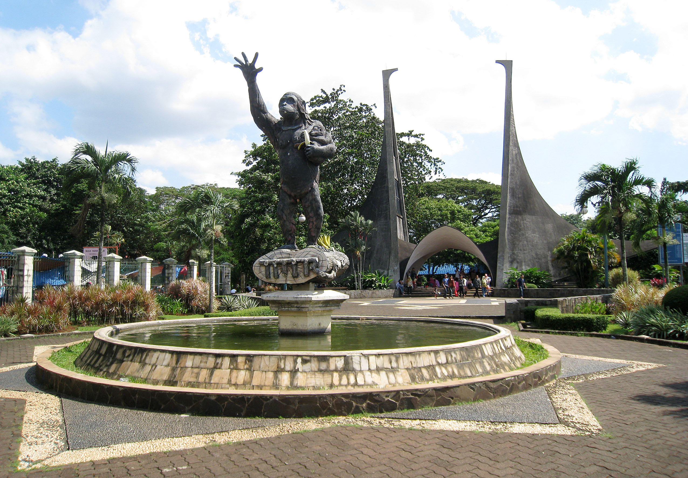
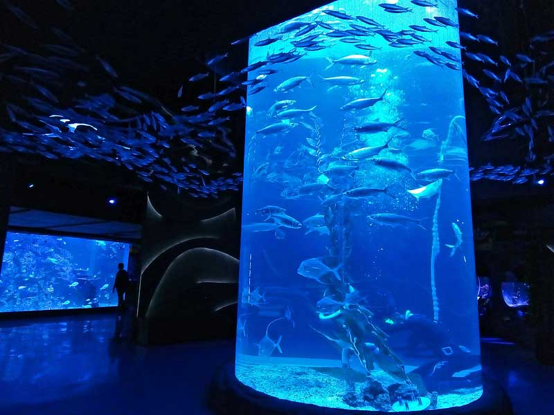
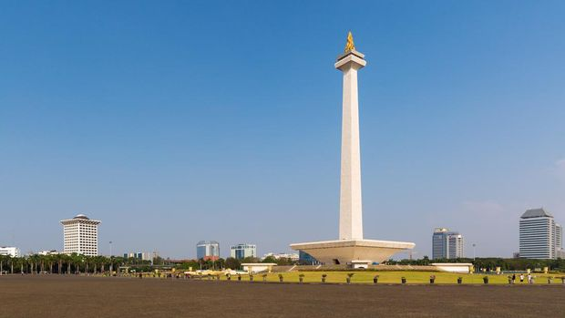
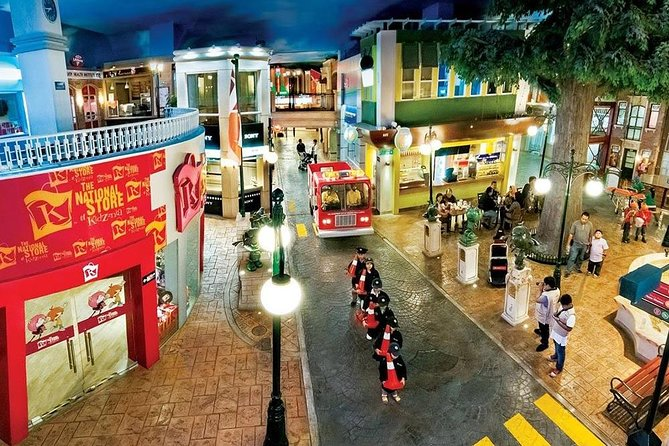

Photo by Detik
7 WISATA MENARIK DI JAKARTA
Jakarta merupakan ibukota negara Indonesia. Sebagai pusat pemerintahan, kota metropolitan ini terlihat begitu padat dan selalu sibuk. Namun, tahukah kalian jika Jakarta juga memiliki tempat wisata yang menarik dan patut dikunjungi? Bukan hanya untuk wisatawan lokal, tapi juga mancanegara. Apalagi bagi kalian yang hanya memiliki sedikit waktu untuk berlibur, kota ini cocok menjadi salah satu pilihan destinasi kalian. Tidak hanya tempat untuk healing, tapi bagi kalian yang suka dengan sejarah dan ingin mencari tempat wisata berbau masa lalu pun ada di kota ini.
Anda penasaran? Simak rekomendasinya berikut ini.

Photo by Travel Kompas
Berikut ini lokasi Taman Mini Indonesia Indah
1. Taman Mini Indonesia Indah
Terletak di Kota Jakarta Timur. Destinasi yang satu ini cocok untuk kalian yang ingin berwisata dengan unsur budaya Indonesia. TMII menawarkan pemandangan kebudayaan bangsa yang mencakup aneka busana dan tarian daerah, miniatur kepulauan Indonesia, kereta gantung, museum, teater, dan lain-lain.
| INFORMASI PENTING | |
|---|---|
| Hari buka : | Setiap hari |
| Jam buka : | Pukul 07.00 - 19.00 WIB |
| Biaya Masuk : | Rp.20.000 (Mobil) |
| Rp.15.000 (Motor) | |
| Rp.40.000 (Bus) | |
Berikut ini lokasi Taman Mini Indonesia Indah

Photo by Pikiran Rakyat Depok
Berikut ini lokasi Taman Impian Jaya Ancol
2. Taman Impian Jaya Ancol
Destinasi di tepi laut Ancol memiliki pantai yang populer untuk olahraga air dan kompleks di tepi laut yang dilengkapi rollercoaster serta wahana di Dunia Fantasi dan taman rekreasi air Atlantis Water Adventure. Keluarga juga dapat menikmati akuarium SeaWorld dengan hiu dan kura-kuranya, serta Ocean Dream Samudra yang menampilkan pertunjukan lumba-lumba dan singa laut. Pasar Seni Ancol menampilkan seniman lokal yang baru muncul dan mengadakan pertunjukan tarian di akhir pekan.
| INFORMASI PENTING | |
|---|---|
| Hari buka : | Setiap hari |
| Jam buka : | Pukul 06.00 - 22.00 WIB |
| Biaya Masuk : | Rp.25.000 (Mobil) |
| Rp.15.000 (Motor) | |
| Rp.45.000 (Bus) | |
Berikut ini lokasi Taman Impian Jaya Ancol

Photo by Wikipedia
Berikut ini lokasi Kebun Binatang Ragunan
3. Kebun Binatang Ragunan
Disebut juga Taman Margasatwa Ragunan, merupakan tempat wisata yang mengenalkan berbagai macam flora dan fauna. Terletak di daerah Ragunan, Pasar Minggu, Jakarta Selatan. Di sini, kalian juga dapat memberikan makanan kepada hewan secara langsung. Sangat cocok untuk berlibur bersama rombongan keluarga.
| INFORMASI PENTING | |
|---|---|
| Hari buka : | Selasa - Minggu |
| Jam buka : | Pukul 07.00 - 16.00 WIB |
| Biaya Masuk : | Rp.4.000 (Dewasa) |
| Rp.3.000 (Anak-anak) | |
Berikut ini lokasi Kebun Binatang Ragunan

Photo by Wikipedia
Berikut ini lokasi Wisata Kota Tua Jakarta
4. Wisata Kota Tua Jakarta
Ingin menikmati Jakarta dengan vibes tempo dulu? Datanglah ke sekeliling area Kota Tua Jakarta dan rasakan nuansa jadul Kota Jakarta tanpa perlu merogoh kocek sedikit pun alias gratis.
Kota Tua Jakarta juga dikenal sebagai Batavia Lama. Wisata di sini menyajikan arsitektur bersejarah peninggalan penjajahan Belanda. Bagi kalian pecinta sejarah, wajib ke sini, nih. Selain itu, banyak spot wisata yang dapat kalian gunakan untuk berfoto. Ada banyak tempat yang akan membuat kalian tertarik, diantaranya : Museum Sejarah Fatahillah, Taman Fatahillah, Jakarta Walking Tour, Jembatan Kota Intan, Magic Art 3D Museum, dan lain-lain.
| INFORMASI PENTING | |
|---|---|
| Hari buka : | Setiap Hari |
| Jam buka : | Pukul 06.00 - 22.00 WIB |
| Biaya Masuk : | Gratis |
Berikut ini lokasi Wisata Kota Tua Jakarta

Photo by Ngetrip
Berikut ini lokasi Jakarta Aquarium & Safari
5. Jakarta Aquarium & Safari
Seperti namanya, di sini kalian dapat menikmati wisata edukasi fauna akuatik dan nonakuatik, bahkan berkesempatan untuk berinteraksi langsung! Kalian bisa menghabiskan waktu akhir pekan dengan menyenangkan di sini. Oh, ya! Tempat ini berkolaborasi dengan Aquaria KLCC, Malaysia, loh. Penasaran? Silakan pergi ke Jl. Letjen S. Parman No. 106, RW 05, Tj. Duren Sel., Kecamatan Grogol Petamburan, Kota Jakarta Barat.
| INFORMASI PENTING | ||
|---|---|---|
| Hari buka : | Setiap Hari | |
| Jam buka : | Pukul 10.00 - 20.00 WIB | |
| Biaya Masuk : | Weekday | Weekend |
| Rp.142.500 (Dewasa) | Rp.166.250 (Dewasa) | |
| Rp.109.250 (Anak-anak) | Rp.142.500 (Anak-anak) | |
Berikut ini lokasi Jakarta Aquarium & Safari

Photo by Detik News
Berikut ini lokasi Monumen Nasional
6. Monumen Nasional
Lokasi yang umum pula disebut Monas ini merupakan monumen peringatan yang didirikan untuk mengenang perlawanan dan perjuangan rakyat Indonesia untuk merebut kemerdekaan. Ada dua destinasi yang bisa Anda pilih, yaitu Cawan & Museum serta Puncak Monas.
| INFORMASI PENTING | |||
|---|---|---|---|
| Hari buka : | Setiap Hari | ||
| Jam buka : | Pukul 08.00 - 22.00 WIB | ||
| Biaya Masuk : | Museum Monas | Puncak Monas | Kawasan Monas |
| Rp.5.000 (Dewasa) | Rp.15.000 (Dewasa) | Gratis | |
| Rp.2.000 (Anak-anak) | Rp.4.000 (Anak-anak) | ||
Berikut ini lokasi Monumen Nasional

Photo by Viator
Berikut ini lokasi Kidzania
7. Kidzania
Kidzania adalah tempat hiburan menarik untuk bermain sembari belajar untuk anak-anak. Anak-anak bisa mencicipi berbagai aktivitas seru mengenai beragam profesi, seperti Beauty Salon, Aviation Academy, Building Climbing, dan lain-lain.
| INFORMASI PENTING | |
|---|---|
| Hari buka : | Setiap Hari |
| Jam buka : | Pukul 10.00 - 16.00 WIB |
| Biaya Masuk : | Rp.166.000 (Usia 2 - 16 tahun) |
| Rp.192.000 (Usia diatas 16 tahun) | |
Berikut ini lokasi Kidzania
Itulah beberapa tempat wisata Jakarta yang sudah buka sebagai referensi melepas penat sejenak. Jadi, buat kamu yang tinggal di Jakarta, gak perlu pergi jauh ke luar kota saat akhir pekan, deh. Tetap patuhi protokol kesehatan yang berlaku di mana pun berada, ya!